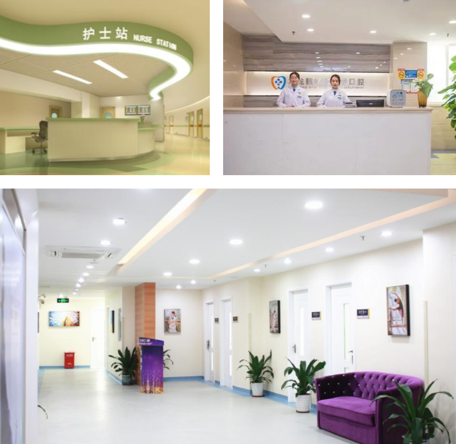

惠医医馆A
来自慧医健康 2021-10-10 13:00

延揽优秀师资，汇聚科学英才。现有教授及正高职人员1031人，博士生导师497人，硕士生导师1097人。其中包括中国科学院院士（含兼职）4人，中国工程院院士（含兼职）5人，教育部长江学者（含特聘、讲座、青年项目）17人，国家杰出青年科学基金获得者15人，国家优秀青年科学基金获得者20人。
不断锐意创新，培育医学人才。学院以培养高层次医学人才为使命，形成立德树人、全面发展的高质量人才培养体系，建立全员育人培养模式、全过程教育生态圈和全方位教学互动机制，打造课程、科研、实践、文化、心理等十大育人平台。现设有基础医学院、脑科学与脑医学学院、公共卫生学院、第一临床医学院、第二临床医学院、第三临床医学院、第四临床医学院、妇产科学院、儿科学院、口腔医学院、护理系11个院系，拥有7家直属附属医院。